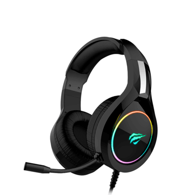

saiba mais Visite nosso site!
Nossos Serviços
HEADSET
DESCRIÇÃO DO PRODUTO: Alto-falante: Φ50mm Impedância: 21±15%Ω Sensibilidade: 109dB±3dB Resposta de frequência: 20Hz - 20KHz Microfone: Ø4.0*1.5mm Comprimento do cabo: 2,2 m Plugue: 3,5 mm AUX+USB.
MOUSE
Descrição CARACTERISTICAS: - Marca: Havit - Modelo: HV-MS1011 ESPECIFICAÇÕES: - Iluminação: LED RGB - Interface: USB - Teclas: 8 - Resoluções: 1200-1600-2400-3200-4800-7200 DPI - Vida útil: 3.000.000 de cliques - Comprimento do cabo: 1.6m - Dimensão total: 122.8 x 65.7 x 35mm CONTEUDO DA EMBALAGEM: - Mouse Gamer, Havit, Ms1011 - 7200dpi
TECLADO

ESPECIFICAÇÕES Anti-Ghosting: N Key Rollover Comprimento do cabo: 1,5 m Keycaps intercambiáveis: Sim Vida útil da chave: 50.000.000 de vezes (teclado) Tipo de teclado: Mecânico Material: PBT Número de chaves: 89 Corrente de operação: ≤250mA Tensão de operação: 5+/- 0,25 V Tipo de interruptor: Jixian Red (Linear) Peso: 1,05 kg
©HAVIT © 2024 | Desenvolvido por Higor